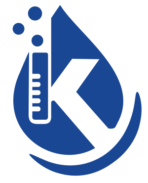

דיגום מי שתייה.
לא מנחשים מה יש במים. מודדים.
דוגם מוסמך לוקח דגימה סטרילית, המעבדה המוסמכת בודקת, ואתם מקבלים דוח ברור עם פירוש והמלצות. למוסדות, לבניינים, לקבלנים לטופס 4 ולבתים פרטיים.
שש סיטואציות שבהן "נראה בסדר" לא מספיק.
הבדיקות נקבעות לפי המערכת.
לא לפי מחירון.
לכל מתקן יש סל בדיקות מתאים. בבניין מגורים אחרי ניקוי מאגר מספיק סל מיקרוביאלי בסיסי. במוסד עם מים חמים צריך גם ליגיונלה. בבניין ישן עם צנרת מתכת כדאי מתכות. אנחנו מתאימים את הסל ומסבירים למה.
ערכי הסף נקבעים בתקנות בריאות העם (איכותם התברואית של מי שתייה ומיתקני מי שתייה), התשע"ג-2013, והדוח מציג כל תוצאה מול הערך המותר: למשל אפס קוליפורמים ב-100 מ"ל, עכירות עד 1 NTU וכלור נותר בין 0.1 ל-0.5 מג"ל.
הדגימה טובה כמו הדרך שבה נלקחה.
רוב החריגות השגויות נגרמות מדיגום לא נכון. לכן התהליך אצלנו קבוע ומתועד.
תוכנית דיגום
מבינים את המערכת: כניסה, מאגר, מים חמים, נקודות קצה. קובעים נקודות, סל בדיקות ומועד, ומתאמים עם התאגיד או הרגולטור כשצריך.
דיגום בידי דוגם מוסמך
בקבוקים סטריליים מהמעבדה, שטיפת נקודת הדיגום, ניטרול כלור (תיוסולפט) בדגימות מיקרוביאליות, ותיעוד שעה ומיקום לכל דגימה.
בדיקות שדה במקום
כלור חופשי, עכירות, pH וטמפרטורה נמדדים במקום במכשור מכויל. התוצאות נכנסות לפרוטוקול ומסייעות לפרש את תוצאות המעבדה.
שרשרת קירור למעבדה
הדגימות מועברות בצידנית מקוררת למעבדה מוכרת ומוסמכת ISO/IEC 17025, ומגיעות אליה בתוך 6 שעות מהדיגום כפי שקובעות הנחיות הדיגום של משרד הבריאות. בלי זה התוצאה לא תקפה.
דוח, פירוש והמלצות
הדוח החתום של המעבדה מגיע אליכם עם מכתב קצר שלנו: מה נמצא, מה המשמעות מול התקנות, ומה לעשות אם משהו חורג.
סגירת מעגל
בחריגה: דיגום חוזר לאימות, איתור המקור, טיפול (לרוב חיטוי) ודיגום בקרה. בתקין: תזכורת לדיגום הבא לפי התדירות שחלה עליכם.
הצעה לפי נקודות וסל בדיקות.
בלי הפתעות בדוח.
הצעת המחיר כוללת את הדיגום, את בדיקות המעבדה ואת הפירוש. מה שמשנה את המחיר:
- מספר נקודות הדיגום
- סל הבדיקות: מיקרוביאלי בסיסי, מורחב, מתכות, ליגיונלה
- דחיפות (טופס 4) ומיקום
- שילוב עם ניקוי מאגר, חיטוי קווים או בדיקת מז"ח באותו ביקור
לחברות ניהול ולמוסדות: תוכנית דיגום שנתית בהסכם מסגרת.
דיגום מי שתייה לבניין או למוסד
הצעת מחיר לפי תוכנית הדיגום
שלחו לנו מה המתקן ומה הגורם הדורש, ונחזור עם תוכנית דיגום ומחיר סגור.
לקבלת מחיר לדיגוםלא בטוחים מה צריך? שלחו תמונה של המתקן בוואטסאפ.
מה שואלים לפני דיגום
מה ההבדל בין ערכת בדיקה ביתית לדיגום במעבדה?
תוך כמה זמן מקבלים תוצאות?
מה קורה אם התוצאה חורגת מהתקן?
מי צריך לדגום ליגיונלה?
כמה נקודות דיגום צריך?
הדוח מתקבל בתאגיד המים ובטופס 4?
ספרו לנו על המתקן. נחזור עם תוכנית דיגום ומחיר.
בניין, מוסד, פרויקט לטופס 4 או בית פרטי. כתבו מה הגורם שדורש את הבדיקה, אם יש, ונתאים את הסל.
קיבלנו, תודה!
נחזור אליכם בהקדם בשעות העבודה.